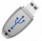

Switch to Firefox. Firefox developers could protect our privacy much better than they do. Firefox is preferable, though, to other browsers right now because many people are developing add-ons that give us more control over its behavior.
We hope that at the party we will help people understand several specific privacy threats to the material on their computers and to their communications over computer networks. The threats people face will depend on how they use their computers, where they take them, and what their own priorities are. We will help them choose, understand, install, configure, and use software to reduce those threats.
Tentative date: Sunday afternoon, February 24, 2013
Location: Peter Coutts Clubhouse, Peter Coutts Circle, Stanford University
Teachers: Gunn High School students, Stanford University professors and students, superlative hacker Daniel Bulow from Denver (http://geekywizard.com/), friends and neighbors
Students: Stanford University faculty and families, other friends and neighbors.
Format: We will have many tables. At each one, teachers will offer instruction one-on-one or one-on-few in a topic, such as how to make the Firefox browser more secure or when, why, and how to encrypt folders on the hard drive.
Needed: Volunteers to to design good graphics for our advertising poster, flyer, and Web pages, to be teachers, to move furniture into place and move it back, to set up supplies at the beginning, to clean up at the end, to choose and run music, to put educational posters and banners on the walls and take them down, to set up and oversee food and beverages, to video the event, to photograph the event, to staff the greeting table (sign up sheet and name tags), to amble about and soothe our guests.
Contact: Rhona Mahony, at rmahony ATSWIRLY stanford LITTLEDOT edu. I live at Peter Coutts Circle, Stanford.
 SWITCH TO FIREFOX
SWITCH TO FIREFOX
Switch to Firefox. Firefox developers could protect our privacy much better than they do. Firefox is preferable, though, to other browsers right now because many people are developing add-ons that give us more control over its behavior.
 ERASE HIDDEN COOKIES AND SUPERCOOKIES
ERASE HIDDEN COOKIES AND SUPERCOOKIES
Some Web sites put cookies in places that Firefox does not know about. Firefox cannot list or delete them. The people who write Bleachbit work hard to find those places and write code to delete those cookies. It works on Windows and Linux computers.
Download Bleachbit: http://bleachbit.sourceforge.net/
https://en.wikipedia.org/wiki/BleachBit
A review: http://download.cnet.comBleachBit/3000-2094_4-75206153.html
We will try to find a program that erases hidden cookies on Apple computers.
STRONG PASSWORDS
With today's fast and cheap GPU's (graphical processing unit), it is easy to crack an eight-digit password quickly. Linux Journal recently ran an article on how to build a very fast password-cracking computer:
http://www.linuxjournal.com/content/hack-and-password-cracking-gpus-part-i-setup
We should all use strong passwords. Today, that means a 13-digit password with a mixture of lower-case, upper-case, numeric, and non-alphanumeric characters.
People who take their security seriously carry their very long, random passwords with them on encrypted USB thumbdrives.
The rest of us can use a strong password that is easy for us to remember.
Here is one method to create a strong yet memorable password.
Pick a song. Write down the initial letter of each of the first 13 or more words.
For example, in the Clash song, "London Calling," the first 15 words are:
"London calling to the faraway towns
Now that war is declared and battle come down"
The initial letters are: L c t t f a t n t w i d a b c d
Now, apply transformations to the letters that you will remember. You could, for example, learn the substitutions that people use in so-called "leet" spelling. Young people who are or wish that they were skillful with computers and networks substitute "4" for "A", "3" for "E", "1" for "i" and so forth.
https://en.wikipedia.org/wiki/Leet
One transformation of our song lines using some leet substitutions is:
L(77f@tntw1d@bcD
This password is strong, until manufacturers sell even faster, cheap GPU's.
 PAY IN CASH
PAY IN CASH
You can buy tangible goods and services and digital goods and services with Visa-branded or MasterCard-branded gift cards. The cards are expensive. For example, you would pay $105 in cash to buy a gift card worth $100. Stores such as Walgreens, CVS, and grocery stores sell those gift cards. The cards have an expiration date and a security code, but no customer name. You can ask the on-line seller to mail a tangible good to a fictitious person at your address. This measure lets you deny both that you bought Doctor Who sheets and that Zhou Enlai lives at your house.
You can also consider getting a mail drop. The formal name is "commercial mail receiving agency." Some companies that offer mail drops are UPS or Mail Boxes Etc. The sender of your mail will not know your real name. Your mail drop provider will know your real name, unless you can persuade the clerk to accept your cash payment for the account without presenting real identification. Defeating a security system by persuading a person, rather than tricking a machine, is called social engineering.
A list of mail drops in the U.S.: http://www.maildropguide.com/
Consider buying things from many different sellers, instead of buying everything from one seller, such as Amazon. Whoever has accumulated a lot of data about you may do things with those data--on purpose or by accident--that make you unhappy.
 OPEN YOUR WIRELESS NETWORK
OPEN YOUR WIRELESS NETWORK
If you open your home wireless network so that passers-by can use it, you will improve your privacy. It may be counter-intutitive, but it is true. Your Internet Service Provider (ISP) can see all the sites that you visit, what you upload, and what you download. So can people who run the eight or eleven routers between you and your destination Web site. When strangers have permission to use your wireless router to reach the Internet, observers cannot attribute to you, personally, activity starting at your IP address. When all of us who can open our wireless, we will grant one another more anonymity. We will also grant one another free and ubiquitous access to the Internet.
https://www.openwireless.org/
 ESCAPE GOOGLE
ESCAPE GOOGLE
 ENCRYPTING FILES, FOLDERS, AND DRIVES
ENCRYPTING FILES, FOLDERS, AND DRIVES
Truecrypt is a free program that runs on Windows, Mac OS, and Linux. It lets you encrypt a file or folder. It also lets you create inside an encrypted folder a second, invisible folder which is encrypted with a second password.
http://www.truecrypt.org/
http://www.truecrypt.org/docs/tutorial
CryptoParty Handbook, p. 284: https://cryptoparty.org/wiki/CryptoPartyHandbook
 PROTECT YOUR EMAIL
PROTECT YOUR EMAIL
We can show students how to switch to Thunderbird. It is a free, highly polished program that brings email to your computer from whatever email provider you use, even Gmail. It gives the user lots of control and protection over privacy and security.
https://en.wikipedia.org/wiki/Mozilla_Thunderbird
https://www.mozilla.org/en-US/thunderbird/
ENCRYPTING EMAIL
We can now use public-key cryptography to encrypt our email. Public-key cryptography is fascinating and complicated. Two major suites of software that use it are Pretty Good Privacy (PGP) and its free, interoperable counterpart, Gnu Privacy Guard (GPG). These programs encrypt files and assure the recipient that the file came from you, not somebody else. At the event, we will show people one easy way to use GPG.
https://en.wikipedia.org/wiki/Pretty_Good_Privacy
See: https://en.wikipedia.org/wiki/GNU_Privacy_Guard
http://www.gnupg.org/
CryptoParty Handbood section, p. 128: https://cryptoparty.org/wiki/CryptoPartyHandbook
The Thunderbird email program works smoothly with GPG, through a free plug-in called Enigmail.
http://www.enigmail.net/home/index.php
If people create key pairs at the party, we may give them a chance to have their keys signed at the party by more experienced GPG users who know them so that the newcomers can enter the web of trust.
http://cryptnet.net/fdp/crypto/keysigning_party/en/keysigning_party.html
TOR, THE ONION ROUTER
Tor is a special Web browser that prevents your destination Web site from knowing where in the world you are and who you are. It anonymizes you by hiding your IP address. It sends your traffic through three or more volunteers' computers on the way to and from your destination Web page. While travelling between the volunteers' computers, your traffic is encrypted. Volunteers are donating bandwidth to Tor on about 4000 computers around the world. The U.S. Navy invented Tor. Now, the developers get foundation funding and contributions from people like us.
You need to understand what Tor cannot do for you in order to use it safely. It is very valuable.
Our goal will be to help interested students understand, download, install, configure, and use the Tor browser, which is the client program. We should consider some physical models to help students understand how the layered encryption and forwarding work.
https://www.torproject.org
http://en.wikipedia.org/wiki/Tor_%28anonymity_network%29
https://www.eff.org/torchallenge/what-is-tor/
Numbers describing activity on the Tor network:
https://metrics.torproject.org/
Anyone who wants to donate bandwidth to the Tor network can do so most easily here:
https://cloud.torproject.org/
https://www.torproject.org/getinvolved/relays.html.en
TAILS, COMPUTER ON A STICK
Tails is a full operating system that fits on a USB stick. It's goal is to protect your privacy and your anonymity. It forces all your Internet connections through the Tor network. It leaves no trace on the computer you have plugged the USB stick into. It encrypts your email, files, and instant messages.
https://tails.boum.org/
 Reading the Hard Drive without the Password
Reading the Hard Drive without the Password